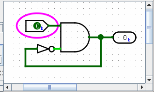
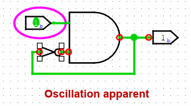

振荡误差
传播算法通常默默地工作，不会出现任何问题，但当您创建振荡电路时，传播算法将变得非常明显。

该电路目前处于稳定状态。 但如果将输入更改为 1，电路将有效地进入无限循环。 一段时间后，Logisim-evolution 将放弃并显示“振荡明显”消息，告诉您它认为电路正在振荡。

它将显示放弃时的值。 这些值看起来是错误的 - 在此屏幕截图中，AND 门虽然其输入之一为 0，但仍发出 1，但 NOT 门可能有 1 个输入和 1 个输出。
Logisim-evolution 会用红色圈出似乎与振荡有关的每个位置。 如果涉及的点位于子电路内，Logisim-evolution 将以红色绘制该子电路的轮廓。
当 Logisim-evolution 检测到振荡时，它会关闭所有进一步的仿真。 您可以使用菜单| Simulate |→| Simulation Enabled |.
Logisim-evolution 使用相当简单的技术来检测振荡：如果电路仿真似乎进行了多次迭代，那么它将简单地放弃并报告振荡。 （它识别为涉及的点是那些在最后 25% 的迭代中触及的点。）因此，它可能会错误地报告振荡，特别是在您使用异常大的电路时； 但它会比我使用 Logisim-evolution 构建的任何一个都要大。 无论如何，如果您确信报告有错误，您可以通过项目选项窗口配置振荡发生之前完成的迭代次数。 模拟选项卡。
下一步： 缺点。